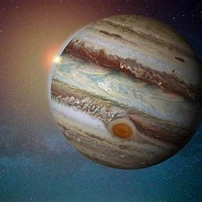

🪐 Jupiter: The Gas Giant

~ 🔍 General Information:
-Position from the Sun: 5th planet
-Equatorial Diameter: About 143,000 km
-Length of Day: Around 9.9 Earth hours
-Orbital Period: About 11.86 Earth years
-Moons: Over 95 moons, including Ganymede, the largest moon in the solar system
~ 🌫️ Atmosphere and Weather:
-Main Components: Mostly hydrogen and helium
-Great Red Spot: A giant storm larger than Earth that has lasted for centuries
-Bands and Zones: Jupiter’s atmosphere features colorful cloud bands due to strong winds and storms
~ 🧲 Magnetic Field and Rings:
-Magnetic Field: About 20,000 times stronger than Earth’s
-Rings: Faint ring system made of dust particles, not easily visible like Saturn's